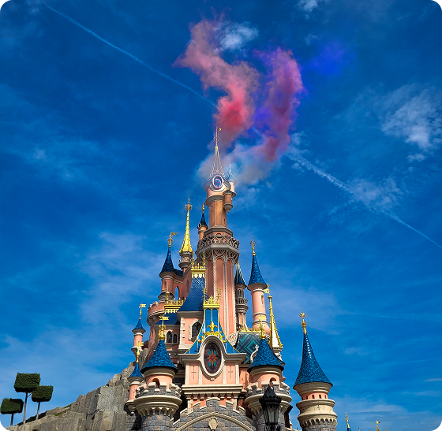

Hey salut je m’appelle Morgane
Créative, rigoureuse et curieuse, je suis attirée par les métiers qui allient savoir-faire artisanal et sens esthétique.
Aujourd'hui, je souhaite donner une dimension concrète et manuelle à ce parcours et recherche un stage en bijouterie, au sein d'un atelier où je pourrai apprendre le métier par la pratique.
Dates du stage : 3 semaines, du lundi 4 janvier au vendredi 22 janvier 2027.
J'ai récemment intégré un CAP Bijouterie-Joaillerie en un an au sein de la SEPR de Lyon. Cette formation confirme chaque jour ce qui m'attirait vers ce métier : le mélange de technicité, de créativité et de précision.
J'y retrouve l'exigence du geste, le sens du détail et la sensibilité artistique qui m'ont donné envie de m'y engager.
Mon parcours en commerce, gestion et design m'a apporté une vision stratégique autant qu'une sensibilité créative.
Le CAP me permet aujourd'hui de lui donner une dimension concrète et artisanale. Pour aller plus loin, je recherche un stage en atelier, où je pourrai confronter mes acquis à la réalité du métier, apprendre au contact de professionnels et consolider un projet que je construis avec sérieux et détermination.
Mon parcours et ce qu’il m’a apporté
Mon parcours académique m’a permis d’acquérir des compétences variées et complémentaires, utiles pour évoluer dans le secteur de la bijouterie.
Le BTS Management Commercial m’a apporté des bases solides en relation client, techniques de vente, négociation et fidélisation. Ces compétences sont essentielles pour comprendre les attentes des clients, valoriser une création et développer une clientèle.
La Licence Économie-Gestion, parcours performance des entreprises, m’a permis de comprendre le fonctionnement global d’une activité : gestion financière, stratégie, organisation et rentabilité. Ces connaissances sont particulièrement importantes pour gérer un atelier, fixer des prix cohérents et assurer la pérennité d’une activité artisanale.
Enfin, le Bachelor en Création et Design Digital a renforcé ma créativité, mon sens esthétique et ma capacité à valoriser visuellement des créations. Il m’a également permis de développer des compétences en communication et en mise en valeur de produits, notamment sur les supports numériques.
Enfin, le CAP Bijouterie-Joaillerie en un an, que je suis actuellement, vient donner à ce parcours sa dimension technique et manuelle. Cette formation intensive m'apporte les gestes fondamentaux du métier (sciage, limage, soudure, mise en forme...) ainsi que la connaissance des matériaux, la lecture de dessins techniques et les règles de sécurité de l'atelier. Au-delà de la technique, elle me forme à la rigueur, à la précision et à la patience qu'exige le travail à l'établi, et me permet de passer de l'idée à l'objet fini.
Galerie
Chaque image permet d’accéder à une catégorie et d’explorer les projets associés.


Centre d’intérêts et passion
- Photographie
- Voyages
-
 Création
Création
-

Univers Disney